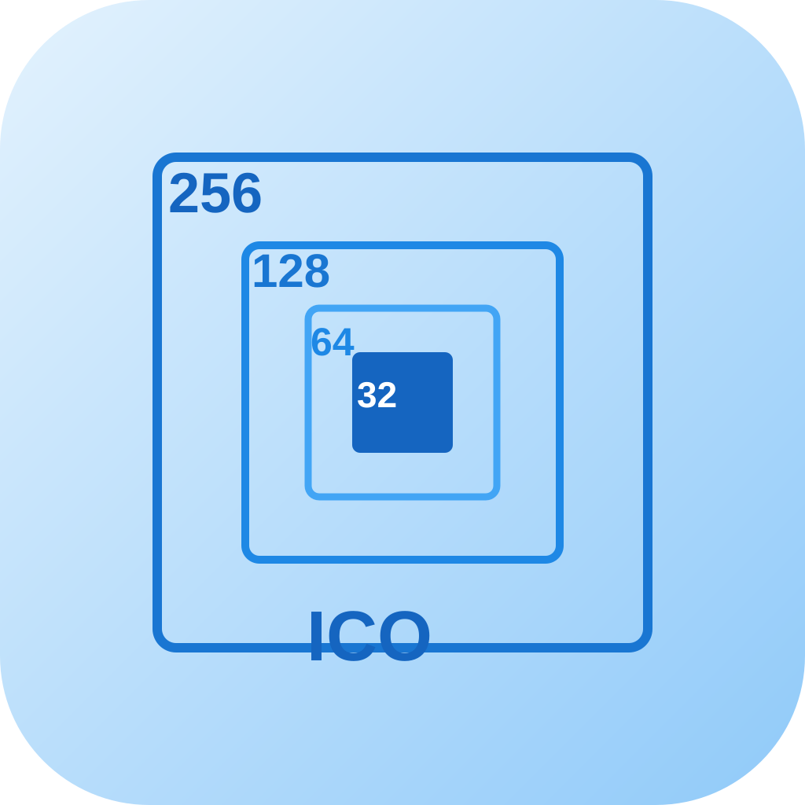
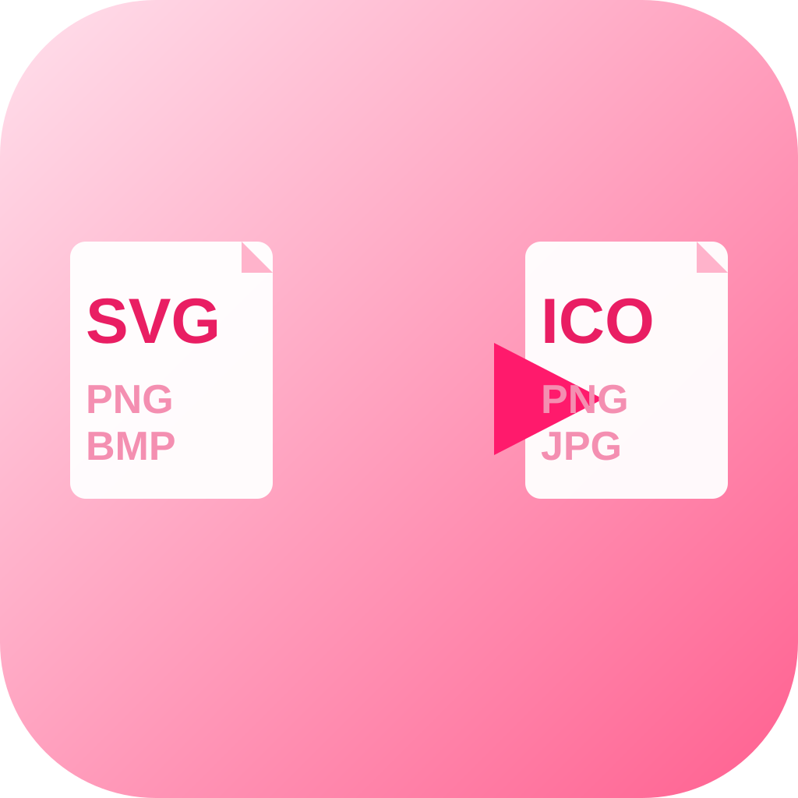
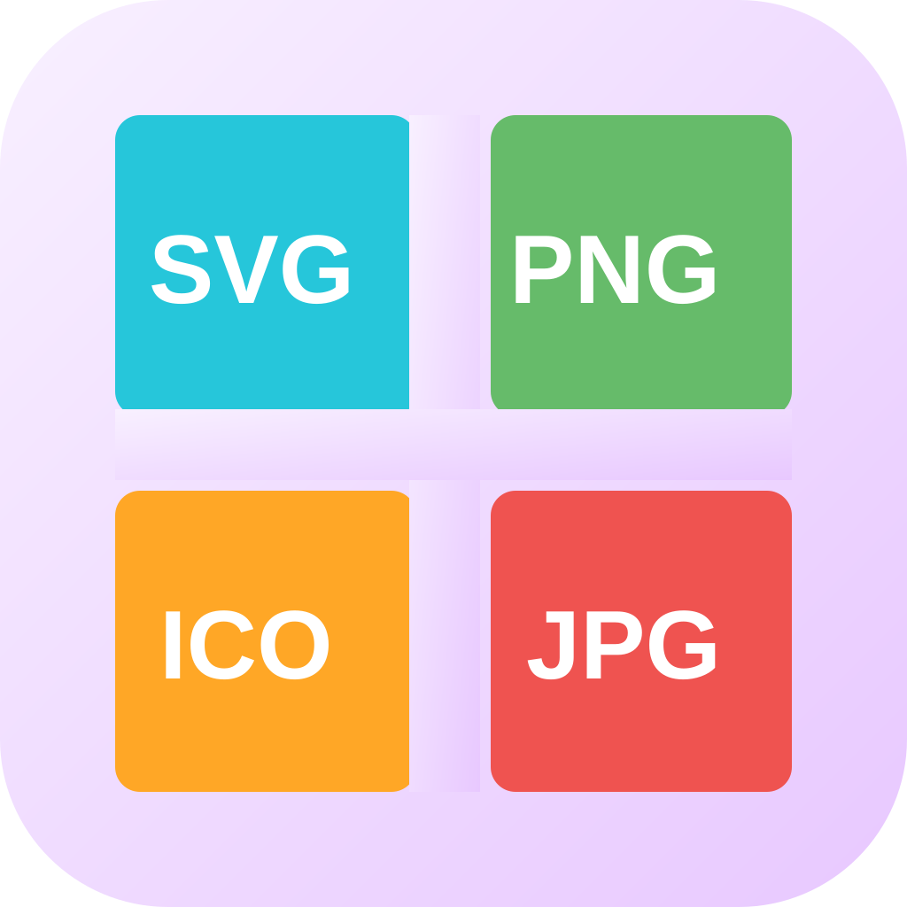
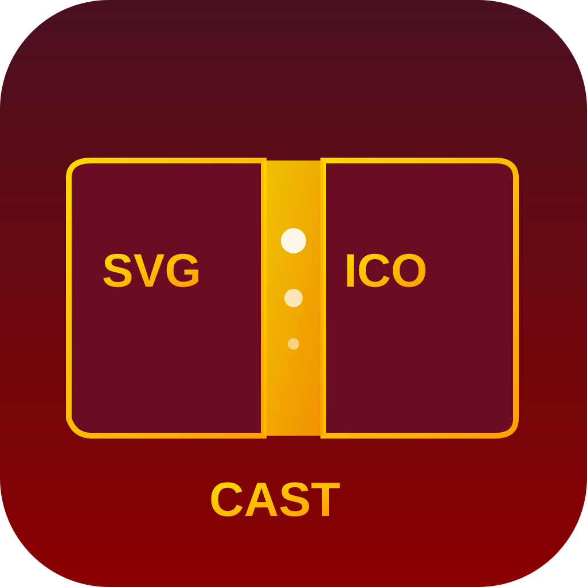
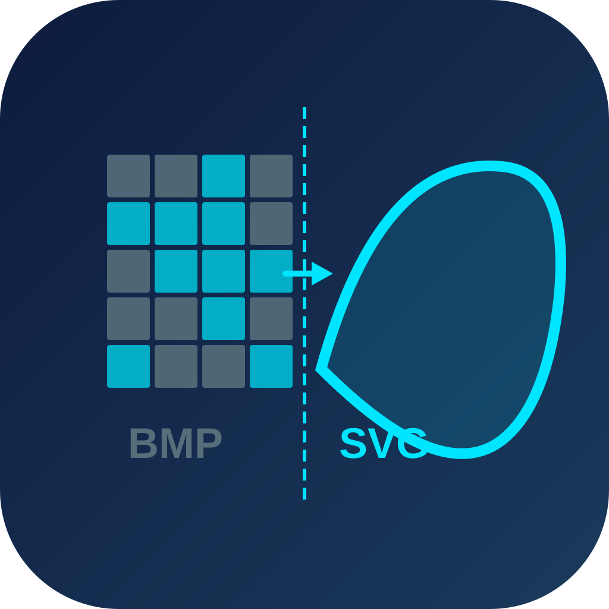
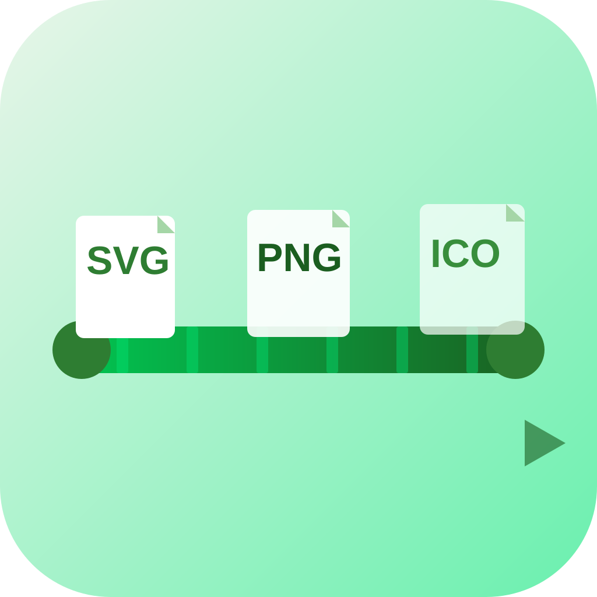
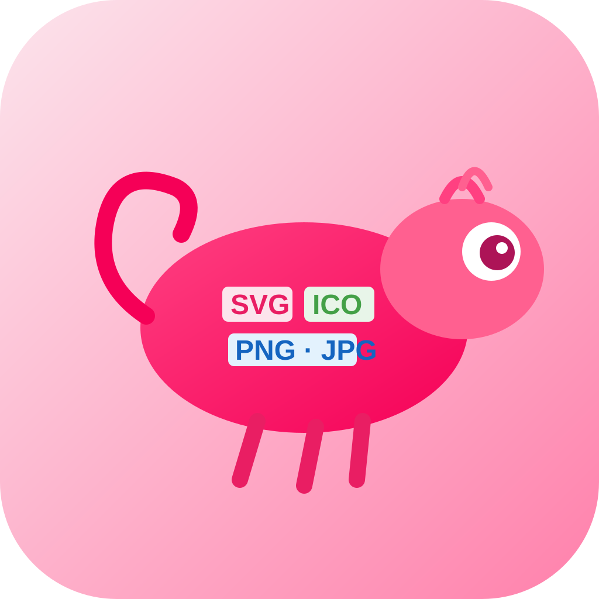
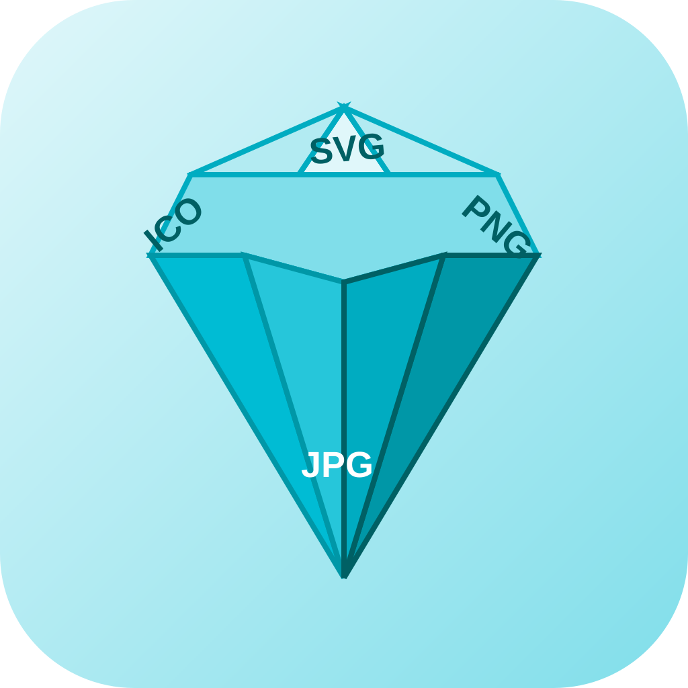
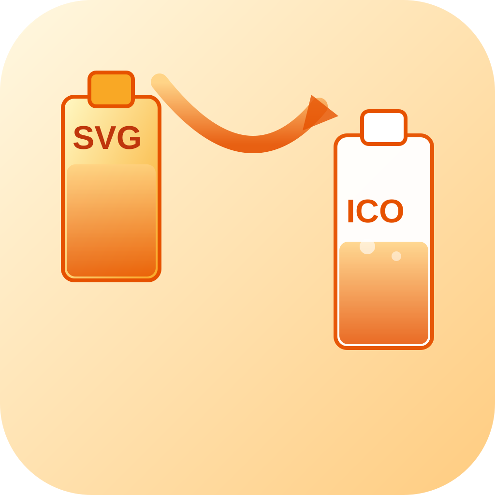
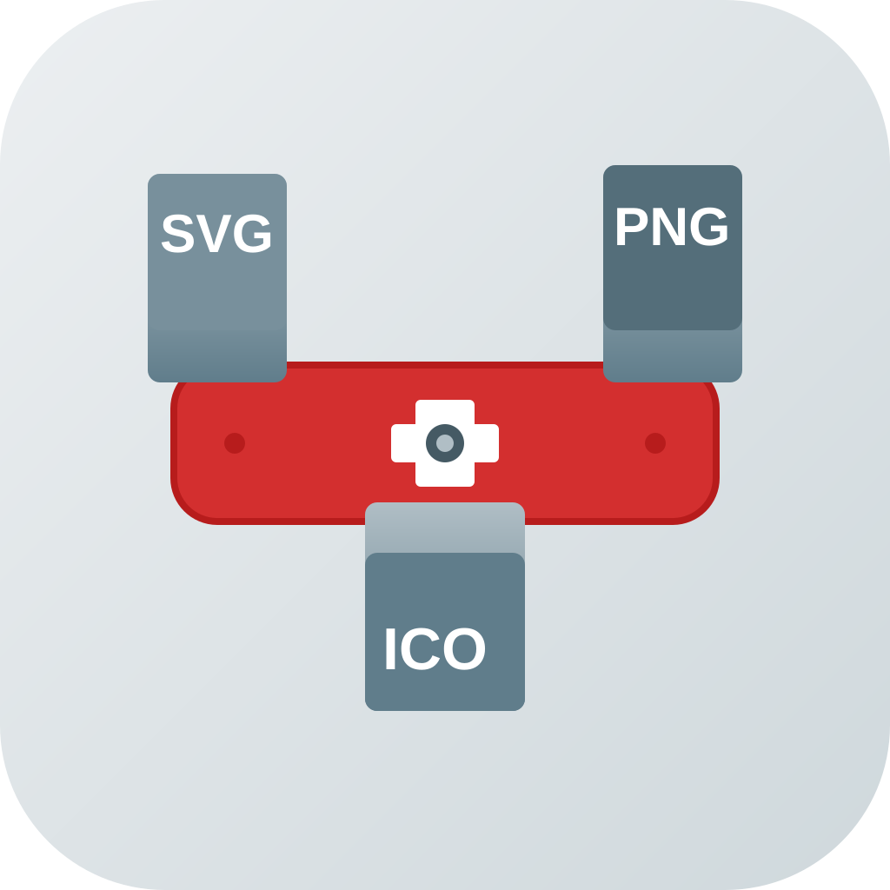

icon_01 · literal
SVG/PNG/ICO 레이블 적힌 파일 카드 3장 레이어드
레이어드 · 민트/청록
icon_02 · literal
SVG 파일이 드롭존으로 떨어지는 드래그앤드롭 장면
동적/대각선 · 주황-노랑
icon_03 · literal

ICO 멀티사이즈 — 256·128·64·32 중첩 프레임
기하학 추상 · 스카이블루-파랑
icon_04 · literal

SVG 파일 → 화살표 → ICO 파일 변환 다이어그램
중앙 심볼 · 코랄-핑크
icon_05 · literal

SVG·PNG·ICO·JPG 포맷 2×2 컬러 그리드
기하학 추상 · 파스텔 멀티컬러
icon_06 · literal
ICO 파일 + 멀티사이즈 목록 + 완료 체크 뱃지
중앙 심볼 · 에메랄드-라임
icon_07 · literal

CAST 주조 — SVG·ICO 금형 틀 사이 금빛 용해물
레이어드 · 버건디-골드
icon_08 · metaphor
SVG·PNG·BMP가 깔때기를 통과해 ICO 하나로 수렴
공간/장면 · 보라-라벤더
icon_09 · metaphor

픽셀 격자(BMP) ↔ 매끈한 벡터 곡선(SVG) 대비
공간/장면 · 네이비-시안
icon_10 · metaphor
마법 지팡이가 흐릿한 SVG를 ICO로 변환하는 마법
캐릭터/실루엣 · 황금-노랑
icon_11 · metaphor
SVG(vector) ↔ ICO(bitmap) 양방향 변환 화살표
중앙 심볼 · 자홍-퍼플
icon_12 · metaphor

컨베이어벨트 위 SVG→PNG→ICO 파일 이동 행렬
대각선/동적 · 초록-연두
icon_13 · metaphor
SVG 파일이 녹아 흘러 ICO 용탕으로 재주조
추상/동적 · 볼드 레드-오렌지
icon_14 · metaphor

카멜레온이 몸 색(포맷)을 SVG→ICO→PNG로 바꾸는
캐릭터/실루엣 · 핫핑크-산호
icon_15 · metaphor

다이아몬드 원석이 여러 면으로 깎임 — 1포맷→多포맷
기하학 추상 · 아이스블루-크리스탈
icon_16 · metaphor

SVG 병의 내용물이 ICO 병으로 부어지는 장면
공간/장면 · 앰버-황금
icon_17 · metaphor
암실 현상소 — 현상액에서 ICO 이미지가 서서히 나타남
공간/장면 · 다크 인디고-은색
icon_18 · metaphor
쿠키 커터로 이미지 반죽에서 ICO·PNG·SVG를 찍어냄
기하학 추상 · 파스텔 옐로우-피치
icon_19 · hybrid

스위스아미나이프 — SVG·PNG·ICO 날이 펼쳐진 다기능 변환기
중앙 심볼 · 회색-은색-빨강
icon_20 · hybrid
SVG 번데기에서 ICO 나비로 탈바꿈 — 포맷 변신
캐릭터/실루엣 · 민트-라임-에메랄드